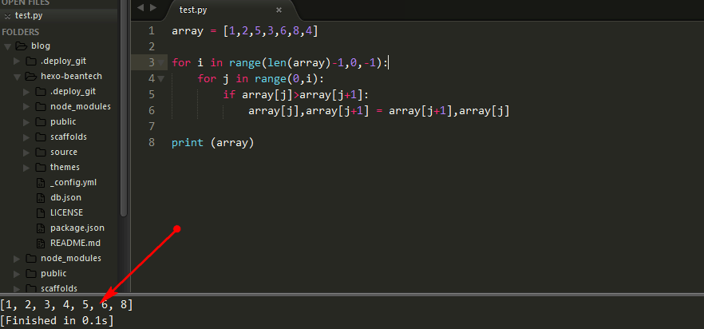

Sublime text3是一款跨平台的非常好用的编辑器，插件多，界面酷，属于轻量级的编辑器。经过配置，可以作为Python的编译器使用，下面是我的配置方法，以Windows为例。
安装Python
直接去Python官网下载安装，安装比较简单，这里不再赘述
配置Sublime
点击Tools -> Build System -> New Build System…
复制下面的代码
1 | { |
“D:\Python36\python.exe” 是你的python安装路径，然后保存为 Python.sublime-build
测试
再编辑器里新建Python文件，输入下面代码
1 | array = [1,2,5,3,6,8,4] |
然后按 Ctrl+b 会出现如下图所示的运行结果，说明配置成功


欢迎访问 dusign 的博客，博客系统一键分享的功能还在完善中，请大家耐心等待。 若有问题或者有好的建议欢迎留言，笔者看到之后会及时回复。 评论点赞需要github账号登录，如果没有账号的话请点击 github 注册， 谢谢 !
If you like this blog or find it useful for you, you are welcome to comment on it. You are also welcome to share this blog, so that more people can participate in it. If the images used in the blog infringe your copyright, please contact the author to delete them. Thank you !